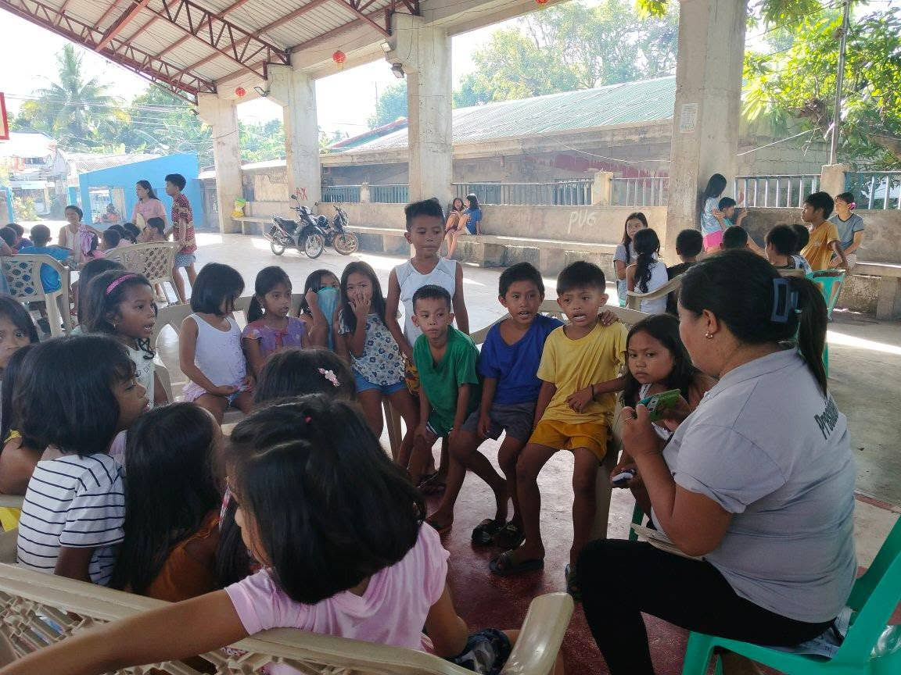
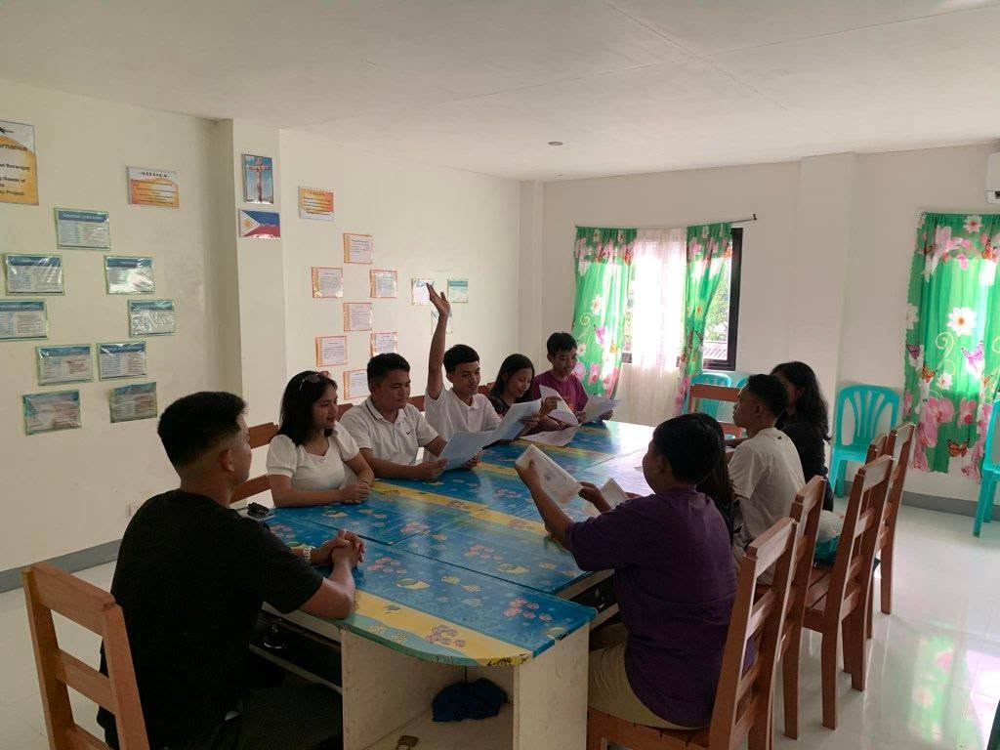
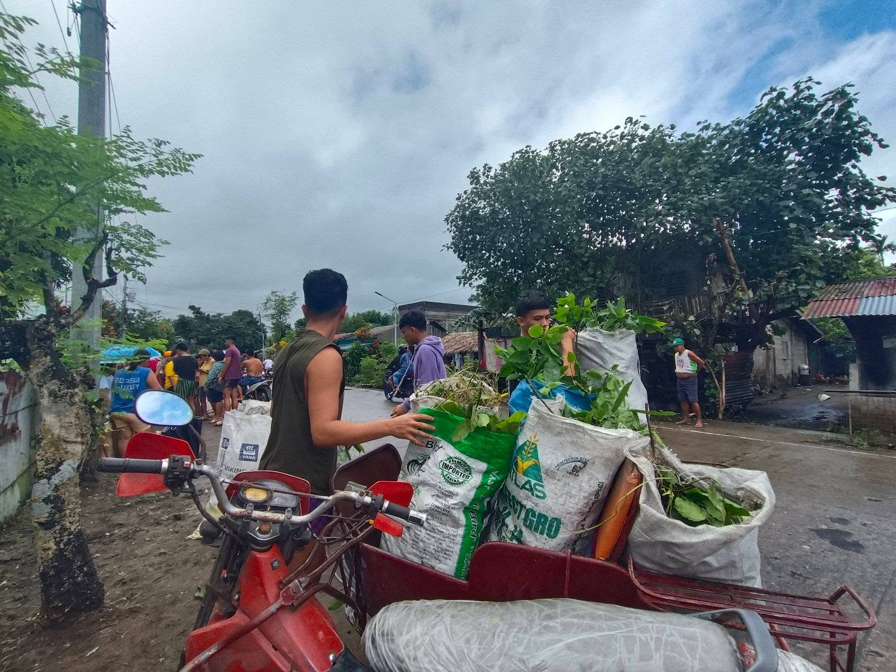
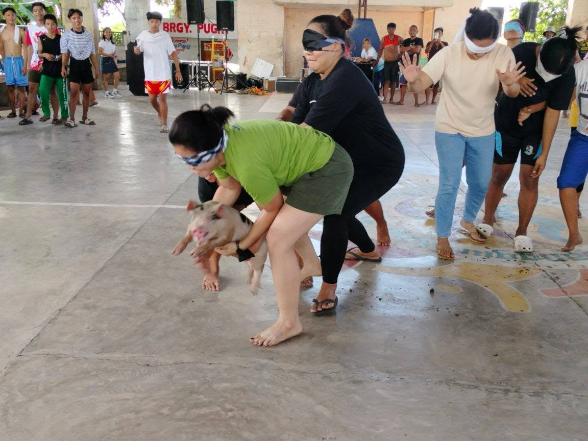
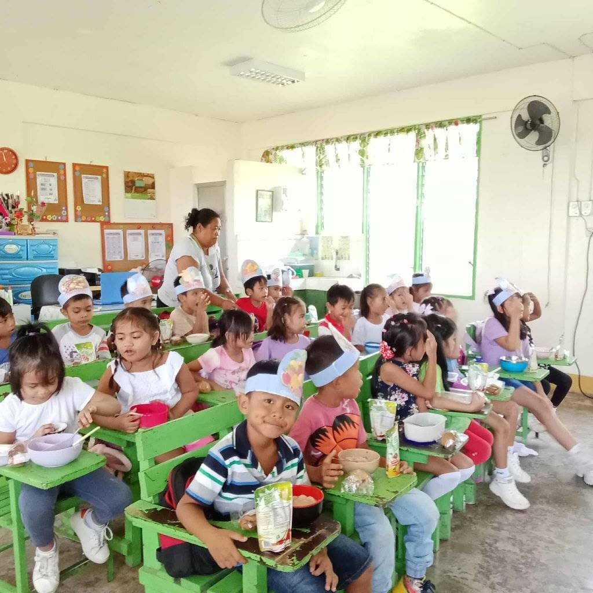
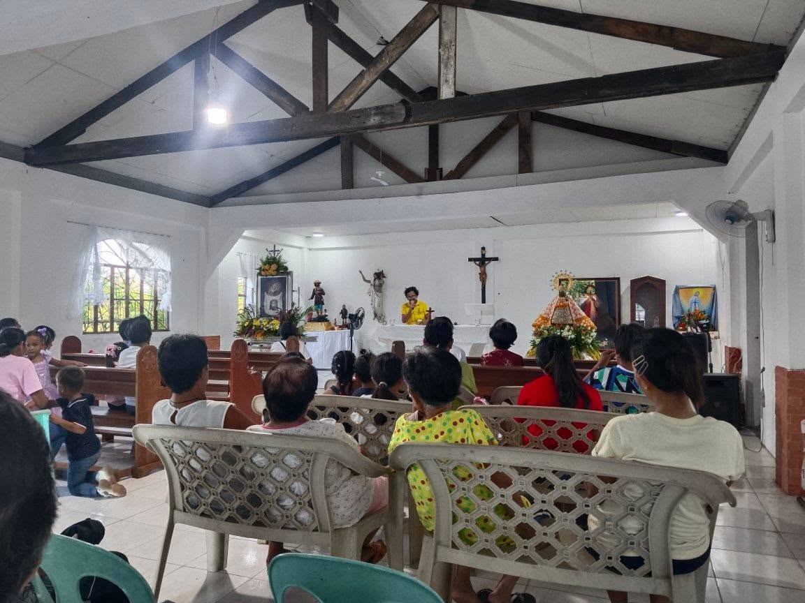
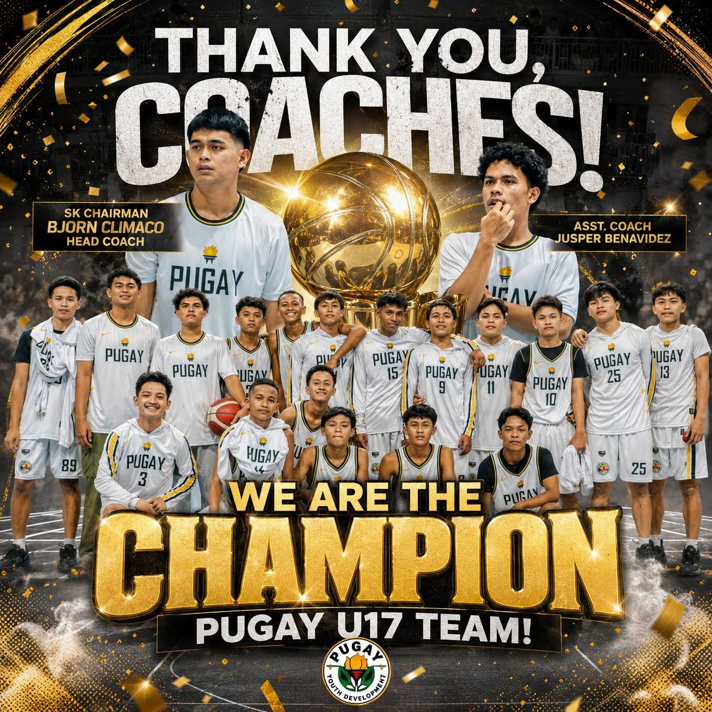
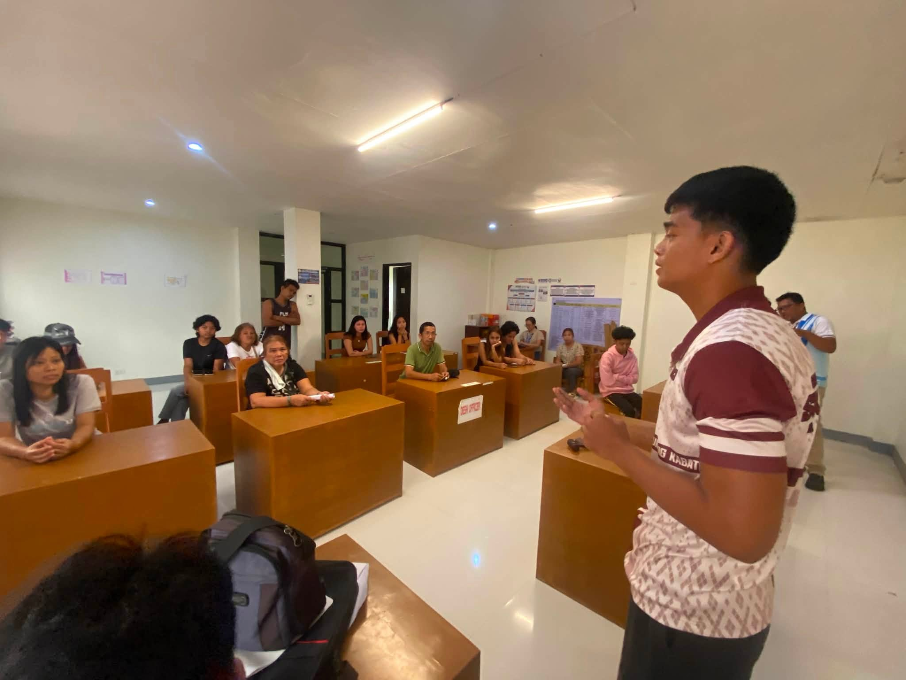
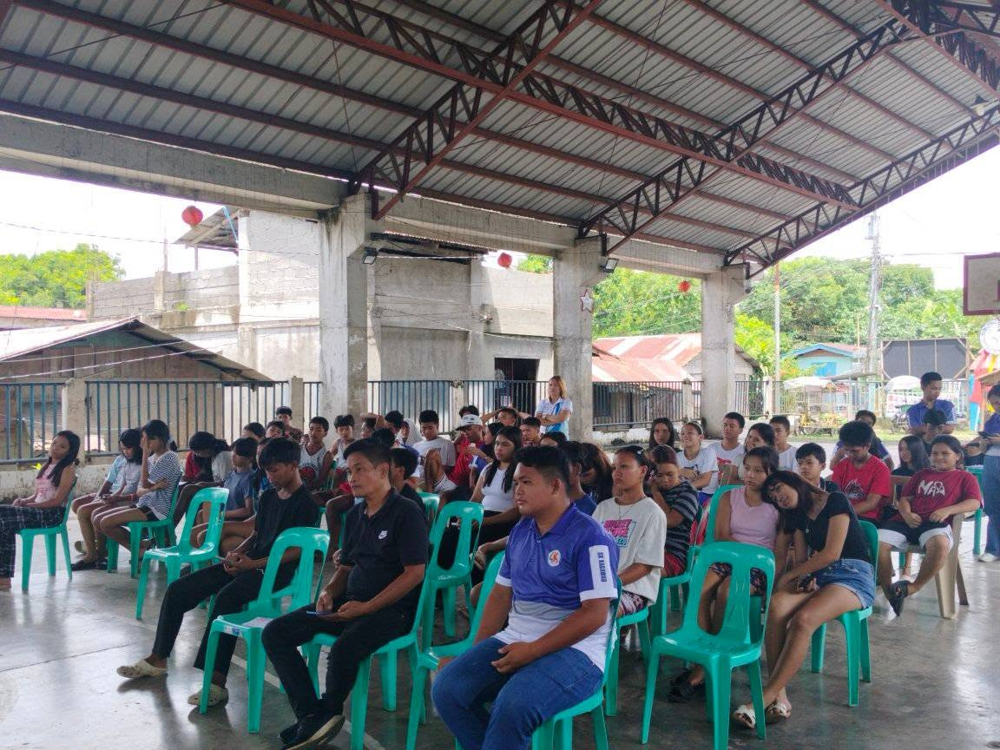

Project BASA is a learning program that helps children develop their reading skills through fun and engaging activities.

SK Meetings are gatherings of Sangguniang Kabataan officials to discuss plans, projects, and future activities for the development and benefit of the barangay youth.

The Clean and Green Program promotes environmental awareness and sustainability in the barangay through community clean-up drives, tree planting, and proper waste management.

Traditional games are an integral part of our cultural heritage, bringing joy and unity to the community especially during fiesta.

The Barangay Feeding Program provides nutritious meals to children in the community, ensuring their health and well-being.

The Peñafrancia Holy Mass is a significant religious event in the barangay, drawing faithful from across the region to celebrate and give thanks.

The Barangay Basketball Team represents the community in local tournaments and promotes sportsmanship and teamwork.

The College Graduate Assistance program supports students in their academic pursuits and helps them transition into the workforce.

The Barangay Youth Congress is a platform for young people to voice their concerns, participate in decision-making, and contribute to the development of the barangay.